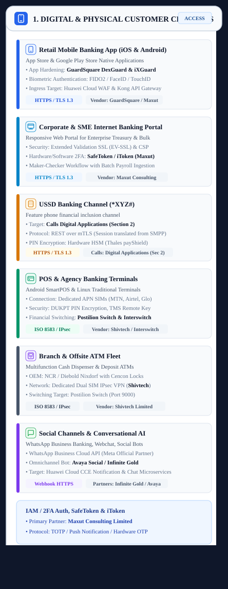

Section 1: Digital & Physical Customer Channels Omnichannel Ingress Tier
Mobile Banking (iOS & Android), Corporate Internet Banking, 85,000 POS Terminals, 1,200 ATMs, USSD (*XYZ#), and WhatsApp Social AI.
📐 Architecture Diagram: Digital & Physical Customer Channels
Vector Scalable Visual Layout
The customer channels operate as segregated ingress points, capturing client financial intent and enforcing channel-specific edge security before handoff:
Native mobile app sessions and web portals operate independently. SafeToken hardware/software 2FA tokens generate dynamic OTPs validated across digital web and mobile sessions.
Terminates feature-phone telco sessions, enforcing an ephemeral 90-second state machine. Directly translates dialed commands (*XYZ*00#, *XYZ*1#) into standardized REST API calls.
85,000 merchant Android SmartPOS and 1,200 ATM dispensers operate isolated terminal firmware, packaging card taps and chip insertions into ISO 8583 financial messages.
| Source / Caller | Channel / Path | Protocol / Port | Business Data Payload |
|---|---|---|---|
| Retail Mobile Customers | Public Internet (iOS / Android) | HTTPS / TLS 1.3 (Port 443) | Customer balance checks, transfers, bill payments, and biometric logins. |
| Corporate & SME Treasurers | Public Internet (EV-SSL Browsers) | HTTPS / TLS 1.3 (Port 443) | Bulk payroll batch uploads, multi-signatory maker-checker approvals, and FX requests. |
| Telco Subscribers | Cellular Radio Networks (MTN/Airtel/Glo) | USSD (*XYZ#) | Offline financial inclusion commands from non-smartphone users. |
| Cardholders & Shoppers | Physical Merchant Counters & Kiosks | EMV Chip & PIN / NFC | In-person debit/credit card retail purchases and cash withdrawals. |
| Target / Destination | Channel / Path | Protocol / Port | Business Data Payload |
|---|---|---|---|
| Section 2: Huawei Cloud WAF | Public Internet via BGP Anycast | HTTPS / TLS 1.3 (Port 443) | Retail mobile app and corporate web traffic passes into Cloud WAF for inspection. |
| Section 2: Digital Applications | Direct Ingress Bus to Cloud Platform | REST API over mTLS (Port 443) | USSD Banking Channel directly calls Cloud Digital Microservices & API Gateway. |
| Section 2: Enterprise API Gateway | Cloud Rest API Ingress | REST API over HTTPS (Port 443) | WhatsApp Business bot and conversational AI sessions forward customer queries. |
| Section 4: Postilion Switch | Dedicated Telco APNs & IPsec VPN | ISO 8583 (Ports 9000–9100) | POS and ATM fleet route financial card transactions directly into on-prem Postilion Switch. |
| Section 8: Contact Center | Voice & WebRTC Trunk | SIP over TLS (Port 5061) | Conversational bot escalates complex disputes to live Avaya contact center agents. |
- Mobile & Web Apps: Connect over public internet via encrypted HTTPS TLS 1.3 to the Huawei Cloud WAF (Section 2).
- USSD Banking Channel: Connects over secure telco trunks directly calling Digital Banking Applications in Huawei Cloud (Section 2), reusing the same microservice business logic as mobile banking.
- POS Fleet (85,000 Terminals): Connect over private telco APNs (MTN/Airtel private SIMs) directly to the on-premise Postilion Payment Switch (Section 4).
- ATM Fleet (1,200 Units): Connect over private MPLS/IPsec circuits to the Postilion Switch.
- Tamper Proofing: GuardSquare DexGuard/iXGuard mobile binary obfuscation prevents reverse engineering or malware injection.
- PIN Encryption: DUKPT (Derived Unique Key Per Transaction) encrypts ATM/POS PIN blocks at the physical SAM chip.
- Zero-Trust Authentication: FIDO2 biometric login (FaceID / Fingerprint) and dynamic SMS/email OTP.
- Certifications: PCI-DSS v4.0 Level 1 certified; compliant with CBN Consumer Protection Framework.